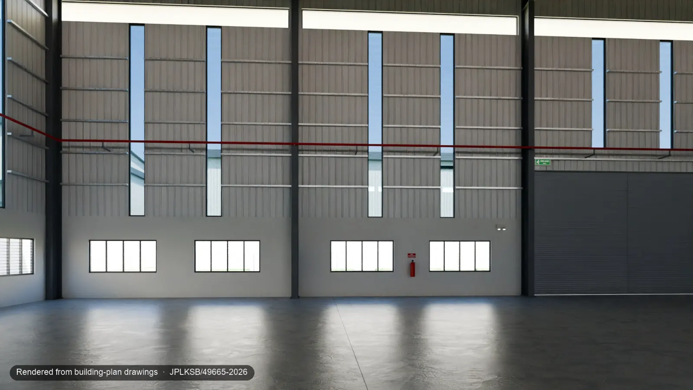
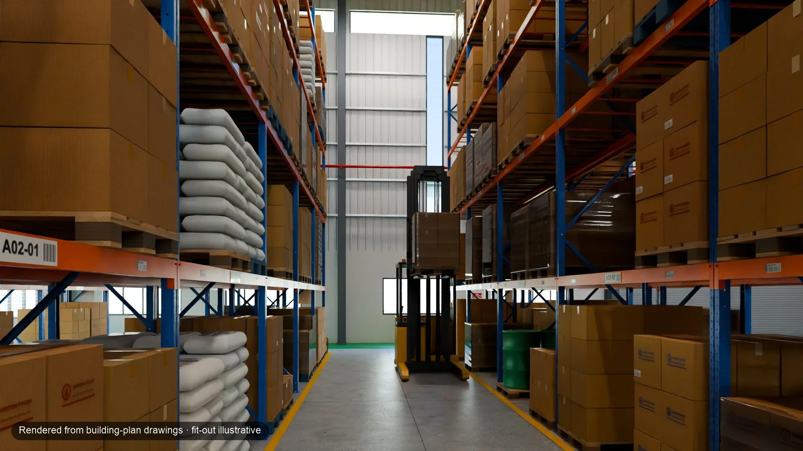

Bangunan yang diterangkan di atas kertas.
Helaian pelan bangunan menerangkan tapak, kilang dan pejabat. Kami menggunakan set lukisan JUN 2026 yang telah dikemukakan, tetapi belum mendapat kelulusan.
Kajian kesPT 49665Eco Business Park V, Bandar Puncak Alam, SelangorHelaian 4 / 8
Ruang kilang dan pejabat dua tingkat dalam satu persembahan. Terokai susun atur, bandingkan kelengkapan dalaman ilustratif dan semak dimensi utama terhadap pelan. PT 49665 ialah hartanah keluarga pengasas kami, bukan milik pelanggan berbayar, dan tidak ditawarkan untuk dijual atau disewa melalui Idyra.
Set lukisan JPLKSB/49665-2026 (JUN 2026; telah dikemukakan, belum mendapat kelulusan). Status pembinaan: perlu disahkan oleh pemilik. Kelengkapan dalaman ialah ilustrasi. Agensi pada contoh halaman perkongsian ialah rekaan.


Mengikut pelan Susun atur logistikGerakkan pembahagi: bangunan mengikut lukisan, kemudian satu kemungkinan susun atur logistik. Bangunan dan kamera yang sama.
Masuk ke dalam modelAngka seperti yang tercetak pada helaian, dibundarkan kepada 1 m² dan 0.1 m; angka kaki persegi ditukar daripada m². Rujukan menyatakan helaian lukisan dan halaman dalam set.
DemonstrasiInput → model → persembahan
Contoh pelaksanaan proses kami, dengan batasannya dinyatakan. Ini ialah hasil demonstrasi; kandungan pakej berbeza.
Helaian pelan bangunan menerangkan tapak, kilang dan pejabat. Kami menggunakan set lukisan JUN 2026 yang telah dikemukakan, tetapi belum mendapat kelulusan.
Kami membina model berskala daripada fakta dalam lukisan, kemudian menambah susun atur logistik dan pembuatan ringan yang berlabel. Pertukaran keadaan membezakan bangunan mengikut lukisan daripada kemungkinan penggunaannya.
Model yang boleh diterokai dari dalam, 12 imej, filem 54 s, 3 video menegak, helaian spesifikasi berujukan dan contoh halaman perkongsian. Terokai susun atur, bandingkan pandangan dan cari sumber sesuatu dimensi.
103 semakan yang direkodkan lulus: 101 dimensi dalam lingkungan 0.1 m daripada lukisan dan 2 kiraan tepat. 5 perkara masih ditandakan untuk pengesahan di tapak.
Ini menunjukkan hasil dan proses semakan. Ia bukan bukti hasil jualan pelanggan, jualan yang lebih pantas atau ukur bangunan siap bina.
Imej pegun12 imej jejak laluan cahaya · 11 pasangan mengikut pelan
Dirender dengan Cycles pada 1920 × 1080. Gunakan suis di bawah imej untuk melihat sudut kamera yang sama mengikut pelan: bangunan, tapak dan landskap seperti dalam lukisan, tanpa kelengkapan dalaman, kereta atau orang.


Treler 40-ft dalam pandangan ruang pemunggahan ialah ilustrasi; akses dan pusingan treler belum disemak (perlu disahkan oleh pemilik). Pandangan konsep sedia beroperasi hanya menunjukkan penggunaan ilustratif: kebenaran sesuatu penggunaan bergantung pada hak milik tanah dan kelulusan perancangan.
AI, hanya di dalam kawasan bertopeng9 imej dengan orang
Model imej menambah orang dalam kawasan bertopeng yang kami lukis pada lantai kosong. Di luar topeng, imej komposit sepadan dengan render piksel demi piksel; langkah pengkomposan kami menyemaknya sebelum label ditambah dan imej dimampatkan untuk web. Kami menetapkan peraturan ini kerana kesemua 20 output mentah model telah mengubah bahagian imej di luar topeng.


FilemFilem induk 54 s · 3 video menegak
Filem kajian kes asal sepanjang 54 saat ini menggabungkan pergerakan kamera melalui model, peralihan pandangan mengikut pelan, dua imej berlabel AI-illustrative dan rakaman skrin pandangan 3D. Tiada babak dalam filem ini dianimasikan oleh AI. Klip pendek beranimasi AI pada halaman utama kami adalah berasingan daripada filem ini dan mempunyai label sendiri.
Label di penjuru kiri bawah setiap babak menyatakan asal visual dan rujukan lukisan JPLKSB/49665-2026.
Petikan menegak filem selama 15 s (0:03.6–0:18.6), dengan jalur atas tetap “PT 49665 · Bandar Puncak Alam / Demo, bukan penyenaraian aktif · Idyra” dan jalur bawah yang menyatakan label asal visual bagi babak pada skrin.
Petikan menegak filem selama 15 s (0:22.5–0:37.5), dengan jalur atas tetap “PT 49665 · Bandar Puncak Alam / Demo, bukan penyenaraian aktif · Idyra” dan jalur bawah yang menyatakan label asal visual bagi babak pada skrin.
Petikan menegak filem selama 15 s (0:30.9–0:45.9), dengan jalur atas tetap “PT 49665 · Bandar Puncak Alam / Demo, bukan penyenaraian aktif · Idyra” dan jalur bawah yang menyatakan label asal visual bagi babak pada skrin.
3D yang boleh diterokai dari dalam3 keadaan · ketik untuk mengukur
Model interaktif berskala berjalan dalam pelayar. Tukar antara keadaan mengikut pelan, logistik dan pembuatan ringan, terokai bahagian dalam, dan ketik dua titik untuk mengukur hingga 0.1 m. Ini ialah model interim, tanpa pencahayaan jejak laluan cahaya seperti dalam imej pegun.
Model 3D berfungsi lebih baik pada komputer; pada telefon, ia boleh mengambil masa 10–15 saat sebelum menjadi interaktif.
Dimuatkan di sini · kira-kira 1.5 MB
Dalam ujian simulasi (sambungan 4G, skrin bersaiz telefon, CPU diperlahankan 4×, dijalankan pada Mac dan belum pada telefon sebenar), binaan web kami yang lebih baharu mula memaparkan imej dalam kira-kira 1.5 s, tetapi 3D-nya hanya menjadi interaktif selepas 11–13 s. Model interim yang ditunjukkan di sini belum diukur masanya. Sasaran kami ialah pandangan pertama dalam kurang daripada 5 s.
KetepatanModel berbanding lukisan
Alat ujian memilih 20 daripada 101 dimensi secara rawak dan mengukur rentang yang sama pada model: kesemua 20 berada dalam lingkungan 0.1 m. Keseluruhan kumpulan juga lulus: 101 dimensi dalam lingkungan 0.1 m dan 2 kiraan tepat.
Lukisan tidak dapat menentukan 5 perkara ini, maka semuanya ditandakan untuk pengesahan di tapak:
Alat ujian mengesan dua kesilapan kami, dan kedua-duanya telah dibetulkan pada model: tiang keluli diletakkan 0.15 m ke dalam daripada garisan dinding, bukan pada garisan gridnya, serta lebar ruang meter air. Imej pegun dirender sebelum pembetulan tiang; anjakan itu tidak kelihatan pada skala imej tersebut.
Semakan ini membandingkan model kami dengan lukisan yang digunakan untuk membinanya. Ia bukan ukur bangunan, dan bangunan mungkin berbeza daripada lukisannya.
Geometri model disemak oleh Idyra terhadap set lukisan pelan bangunan JPLKSB/49665-2026 (JUN 2026; telah dikemukakan, belum mendapat kelulusan). Perabot, peralatan dan orang ialah ilustrasi (dimodelkan atau divisualkan oleh AI, seperti pada label). Bukan keadaan siap bina, bukan ukur tanah, dan bukan pensijilan atau kelulusan oleh mana-mana pihak berkuasa, arkitek atau jurutera.
Hasil serahan
| Hasil serahan | Status | Nota |
|---|---|---|
| Imej pegun jejak laluan cahaya | Selesai | 12 pada 1920 × 1080, 11 pasangan mengikut pelan, 9 versi AI-illustrative dengan orang |
| Filem | Selesai | Filem induk 54 s dan 3 video menegak 15 s, label tertera pada imej |
| Model 3D yang boleh diterokai dari dalam | Sebahagiannya selesai | 3 keadaan berlabel dan fungsi ketik untuk mengukur berfungsi; pencahayaan prahitung masih belum disediakan |
| Helaian spesifikasi | Selesai | 4 halaman, setiap baris disemak terhadap fakta yang telah disahkan. Buka contoh (PDF asal dalam bahasa Inggeris) |
| Halaman perkongsian | Selesai | Demo peribadi dengan agensi rekaan, label pada setiap visual dan kad WhatsApp |
| Pembantu fakta bangunan | Perintis | 80% bagi 50 soalan yang belum pernah dilihat (sasaran 95%); tiada angka direka dan tiada perbincangan harga dalam mana-mana ujian |
| Perbandingan buta dengan render studio | Belum dijalankan | Sehingga ia dijalankan, kami tidak membuat dakwaan tentang perbandingan imej kami dengan imej studio |
Dihasilkan melalui sesi ejen AI (beberapa aliran kerja sering berjalan serentak), bersama semakan pengasas dan rendering semalaman pada sebuah komputer riba.
Beritahu kami tentang bangunan anda melalui WhatsApp dan sama ada anda mempunyai lukisannya. Kami akan cadangkan pakej yang sesuai. Jangan hantar lukisan sebelum borang pesanan ditandatangani.